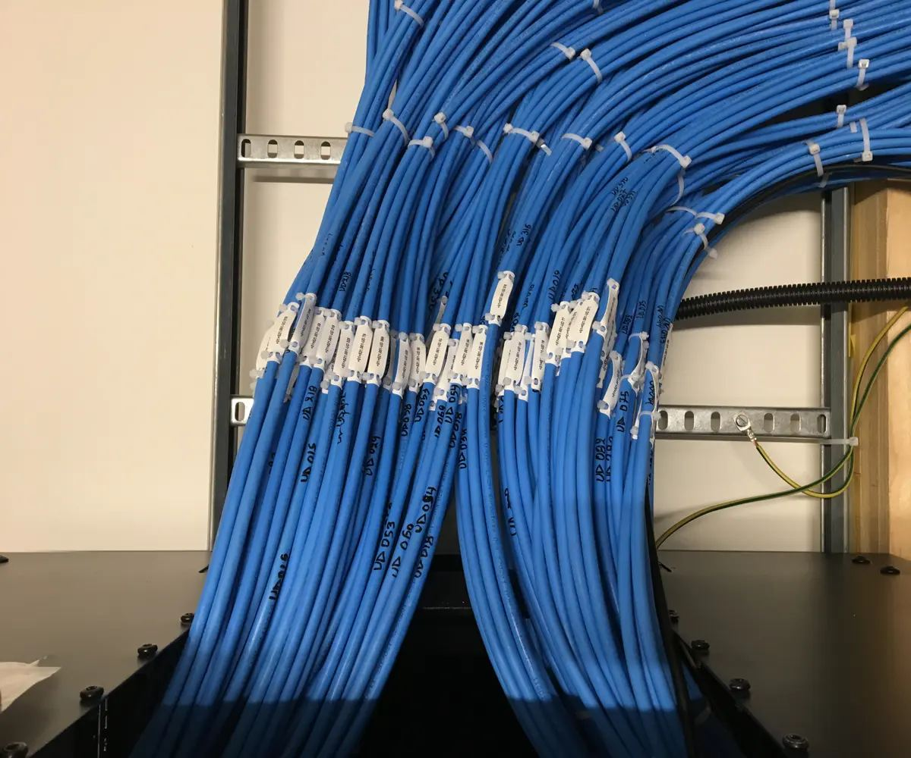
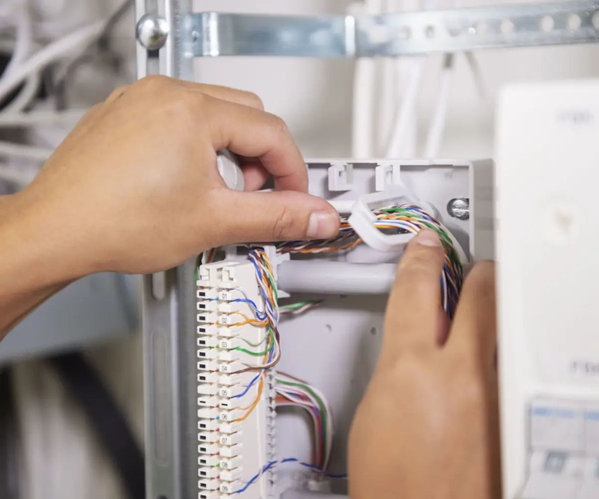
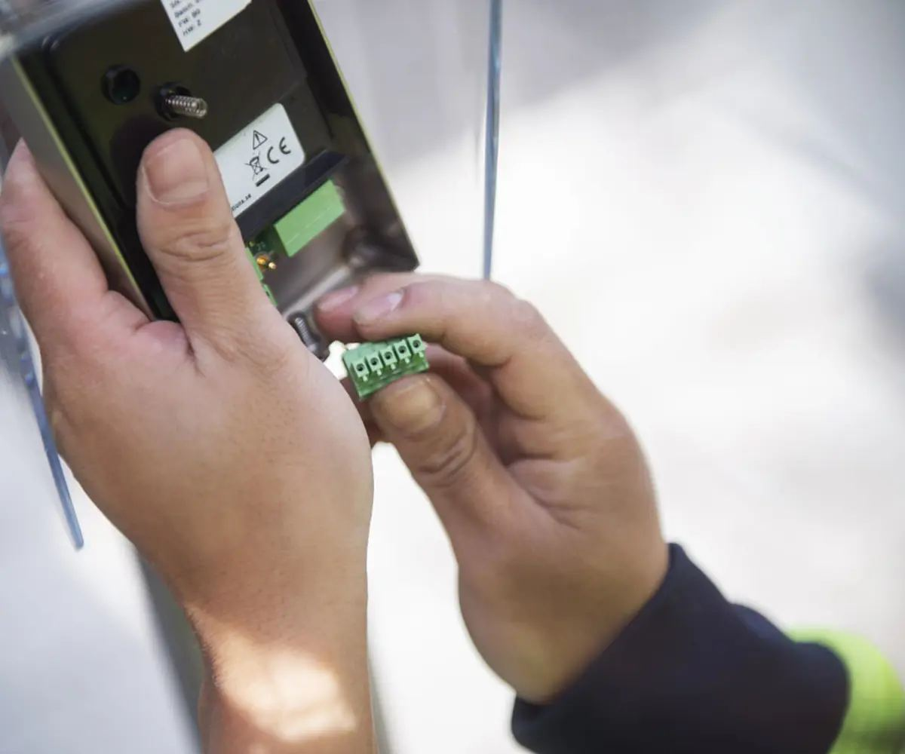

index/tjenester
Tjenester
Installasjon, vedlikehold, prosjekter, styresystemer, termografering og serviceavtaler. Alt utført av egne faglærte elektrikere.

Installasjon og vedlikehold
Nyinstallasjon og utskifting i næringsbygg, skoler, helsebygg og boligselskaper.
Vi tar jobben fra kurs til tavle: nye kurser, utvidelser, utskifting av vern, ny belysning eller omlegging når lokalene endrer bruk. Vedlikeholdet skjer på avtale, ikke når noe først har sluttet å virke.
- Nyinstallasjon og ombygging i eksisterende bygg.
- Utskifting av tavler, vern og kabler.
- Belysning og nødlys, inne og ute.
- Feilsøking og utbedring av avvik.
- Dokumentasjon oppdatert etter arbeidet.

Styresystemer og KNX
Lys, varme, solavskjerming og ventilasjon som snakker sammen – programmert av folk som kan det.

KNX gjør bygget enklere å drifte: færre brytere, faste scenarier og energimåling per sone. Vi programmerer anlegget, setter opp adresser og lager driftsdokumentasjonen som byggets drift trenger.
- Programmering og idriftsettelse av KNX-anlegg.
- Lysstyring, scenarier og tilstedeværelsesstyring.
- Solavskjerming og varmestyring i samme system.
- Opplæring av driftspersonell ved overlevering.
Servicekontrakter
En avtale som sier hva som skjer den dagen noe stopper – før det skjer.
Avtalt responstid
Vi blir enige om hvor raskt vi skal være på stedet, og hva som regnes som akutt.
Faste kontroller
Årlig gjennomgang av tavler, termografering og utskifting av slitte komponenter.
Egne folk
Den som kommer er ansatt hos oss og kjenner anlegget fra forrige besøk.
Dokumentasjon
Hver service gir en rapport med bilder, målinger og hva som bør gjøres videre.
Trenger du en elektriker som kan anlegget?
Ring 22 87 16 00 eller send en beskrivelse, så tar vi en prat om løsningen.